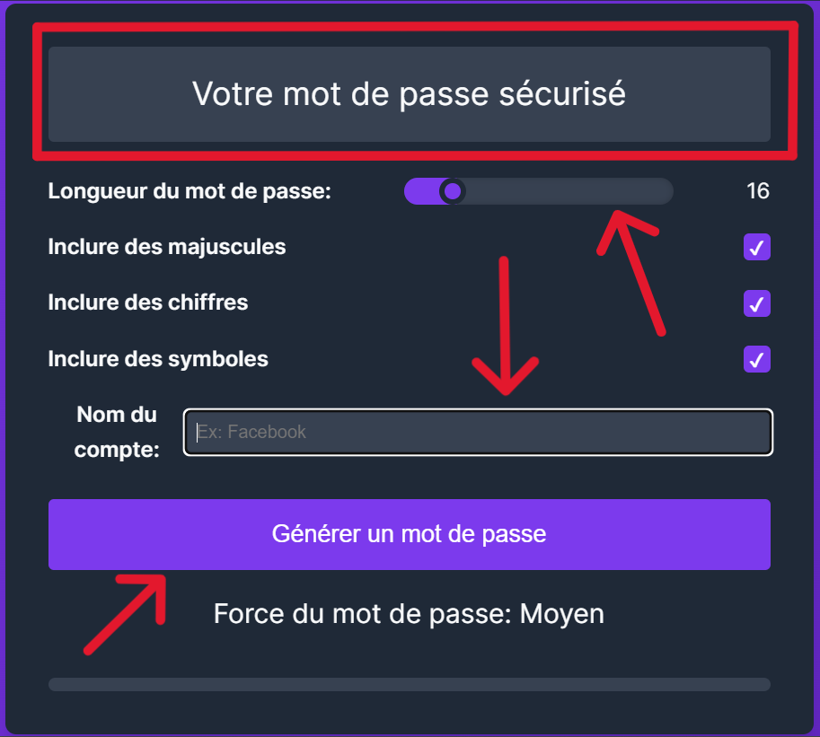

Documentation PassForge
Introduction
Bienvenue dans la documentation de PassForge, votre outil de confiance pour générer des mots de passe sécurisés. Dans un monde où la sécurité en ligne est primordiale, PassForge vous offre une solution simple et efficace pour créer des mots de passe robustes et uniques pour tous vos comptes.
Commencer maintenantCommencer
Pour commencer à utiliser PassForge, suivez ces étapes simples :
- Visitez la page officielle de l'outil
- Ajustez les paramètres selon vos besoins spécifiques
- Cliquez sur "Générer un mot de passe"
- Copiez et utilisez votre nouveau mot de passe sécurisé
C'est aussi simple que ça ! Vous êtes maintenant prêt à sécuriser vos comptes avec des mots de passe de haute qualité.
Fonctionnalités
Longueur personnalisable
Choisissez une longueur de 8 à 64 caractères
Caractères variés
Incluez majuscules, chiffres et symboles
Phrases de passe
Générez des phrases de passe mémorisables
Évaluation en temps réel
Visualisez la force de votre mot de passe
Historique des mots de passe
Suivez et gérez les mots de passe générés précédemment
Pagination
Affichez les mots de passe par pages pour une meilleure gestion
Utilisation
Pour générer un mot de passe sécurisé :
- Réglez la longueur souhaitée à l'aide du curseur
- Cochez ou décochez les options pour inclure majuscules, chiffres et symboles
- Si vous le souhaitez, entrez le nom du compte dans le champ "Nom du compte"
- Cliquez sur "Générer un mot de passe"
- Votre mot de passe sécurisé apparaîtra dans le champ en haut
La force du mot de passe est évaluée automatiquement et affichée en bas de l'interface.
Exemple d'interface :
Stockage des mots de passe
Les mots de passe générés avec PassForge sont stockés localement sur votre navigateur en utilisant le
localStorage. Cette méthode de stockage est sécurisée car :
- Les mots de passe ne quittent jamais votre appareil.
- Vous avez un contrôle total sur vos mots de passe et pouvez les supprimer à tout moment.
- Il n'y a aucun risque de stockage de vos mots de passe sur des serveurs externes.
Le localStorage permet également à PassForge de conserver un historique de vos mots de passe
générés, facilitant ainsi leur gestion et leur réutilisation si nécessaire.
Bonnes pratiques
-
Utilisez un mot de passe unique pour chaque compte :
Utiliser le même mot de passe pour plusieurs comptes augmente considérablement le risque de piratage. Si un pirate réussit à obtenir votre mot de passe, il pourra accéder à tous vos comptes. Utiliser des mots de passe uniques pour chaque compte réduit ce risque en limitant l'impact d'une éventuelle compromission.
Exemple de faille : Les attaques de credential stuffing, où les pirates utilisent des combinaisons de mots de passe volées pour tenter d'accéder à d'autres comptes en ligne.
-
Optez pour des mots de passe d'au moins 12 caractères :
Plus un mot de passe est long, plus il est difficile à craquer. Les mots de passe courts peuvent être facilement devinés ou forcés par des outils automatisés.
Exemple de faille : Les attaques par force brute, où les pirates essaient toutes les combinaisons possibles de mots de passe jusqu'à trouver la bonne.
-
Incluez un mélange de majuscules, minuscules, chiffres et symboles :
Un mot de passe complexe est plus difficile à deviner. En mélangeant différents types de caractères, vous augmentez la sécurité de vos mots de passe.
Exemple de faille : Les attaques par dictionnaire, où les pirates utilisent des listes de mots courants et de combinaisons de caractères pour deviner votre mot de passe.
-
Évitez d'utiliser des informations personnelles dans vos mots de passe :
Les informations personnelles telles que votre nom, votre date de naissance ou le nom de votre animal de compagnie sont souvent faciles à trouver ou à deviner. Les pirates peuvent utiliser ces informations pour deviner vos mots de passe.
Exemple de faille : Les attaques de social engineering, où les pirates collectent des informations personnelles pour deviner ou réinitialiser vos mots de passe.
-
Utilisez un gestionnaire de mots de passe pour stocker vos identifiants en toute sécurité :
Les gestionnaires de mots de passe peuvent générer, stocker et gérer vos mots de passe de manière sécurisée. Ils vous permettent d'utiliser des mots de passe uniques et complexes sans avoir à les mémoriser.
Exemple de faille : Les notes papier ou les fichiers non sécurisés sur votre ordinateur peuvent être facilement accessibles à des tiers non autorisés.
-
Activez l'authentification à deux facteurs quand c'est possible :
L'authentification à deux facteurs (2FA) ajoute une couche supplémentaire de sécurité. Même si votre mot de passe est compromis, l'attaquant aurait besoin du second facteur (comme un code envoyé sur votre téléphone) pour accéder à votre compte.
Exemple de faille : Les attaques par phishing, où les pirates obtiennent vos mots de passe mais ne peuvent pas accéder à votre compte sans le second facteur d'authentification.
FAQ
Oui, nous utilisons un générateur de nombres aléatoires cryptographiquement sûr pour assurer une véritable randomisation.
Absolument. Nous ne stockons jamais les mots de passe générés. Tout le processus se déroule localement dans votre navigateur.
Un mot de passe est généralement une chaîne aléatoire de caractères, tandis qu'une phrase de passe est une séquence de mots aléatoires, souvent plus facile à mémoriser tout en restant sécurisée.
Les experts recommandent de changer vos mots de passe tous les 3 à 6 mois, ou immédiatement si vous suspectez une compromission.
Support
Si vous avez des questions supplémentaires ou besoin d'assistance, n'hésitez pas à nous contacter :
- Email : {{Pas encore définis}}
- Twitter : {{Pas encore définis}}
- Forum d'aide : {{Pas encore définis}}
Notre équipe est là pour vous aider à tirer le meilleur parti de PassForge et à renforcer la sécurité de vos comptes en ligne.
À propos du développeur
Bonjour, je suis Félicio, le développeur de PassForge. Passionné par la sécurité informatique et le développement web, j'ai créé PassForge pour aider les utilisateurs à générer des mots de passe sécurisés facilement et efficacement.